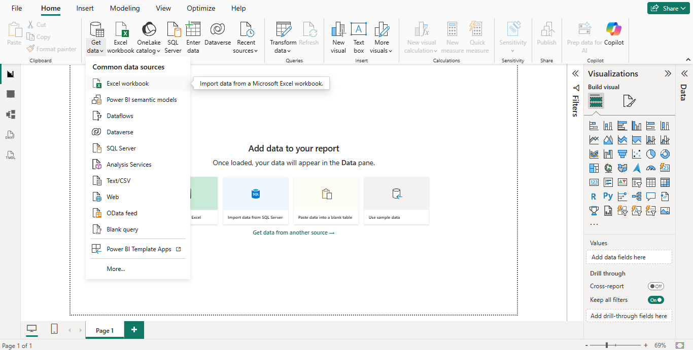
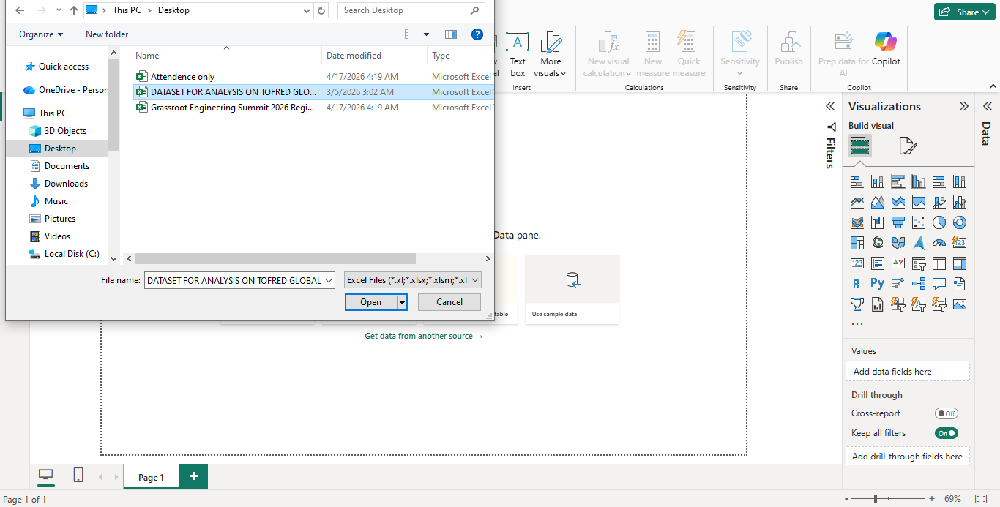
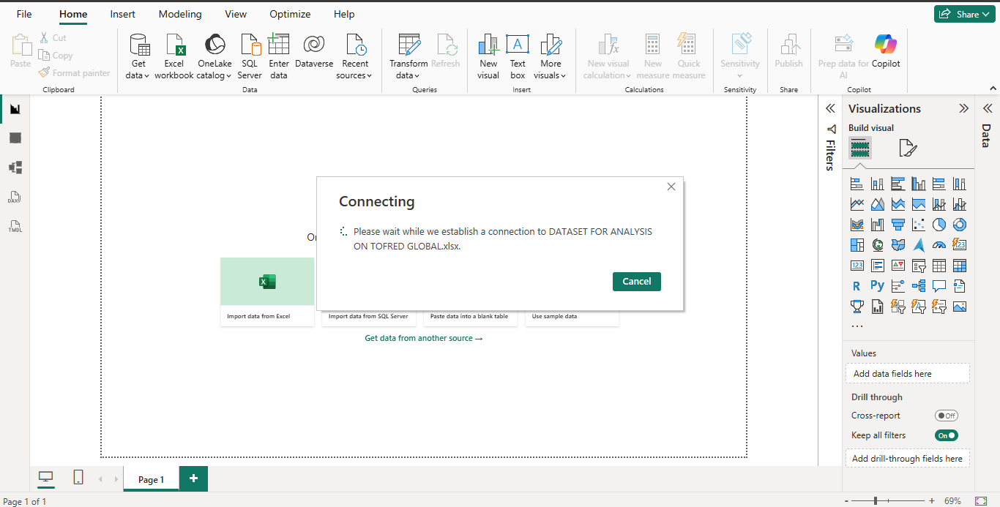
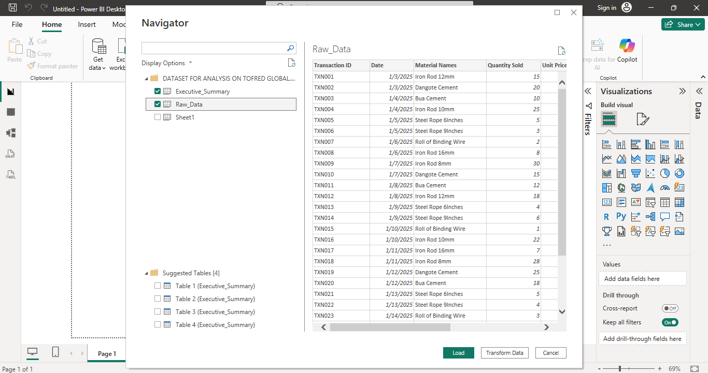
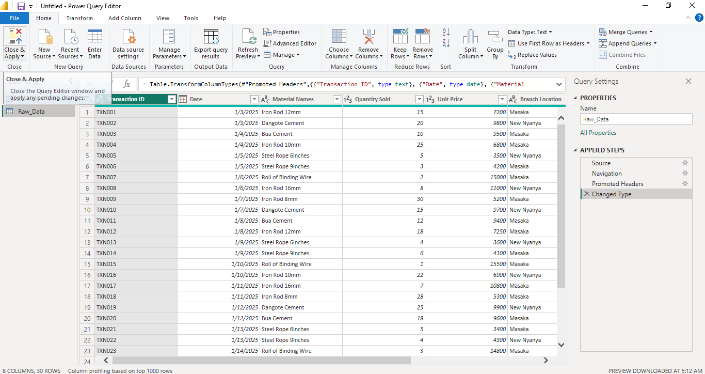

1. Project Overview
A reliable business intelligence report begins with a clear understanding of its source data. Before building measures or visualizations, an analyst must connect to the source, inspect the available fields, and prepare the data for analysis.
This page documents the initial stages of a practical Power BI workflow using screenshots from the project process.
Objectives
- Connect Power BI Desktop to an Excel dataset.
- Locate and select the appropriate source file.
- Inspect the available tables and data preview.
- Load the data into the Power Query environment.
- Document the data preparation stage before analysis.
2. Documented Workflow
Open the Get Data Menu
Begin in Power BI Desktop and open the data connection options. The Get Data menu provides access to supported sources, including Excel workbooks.

Select the Source Workbook
Locate the Excel workbook using the file selection window. Choosing the correct source file is essential because the subsequent preview and analysis depend on the selected data.

Connect to the Excel File
Select the workbook to establish the connection between Power BI and the source data. This makes the workbook's available tables and sheets accessible for inspection.

Inspect the Navigator Preview
Review the available tables or sheets in the Navigator window. Inspecting the preview helps identify the relevant data source before loading it into the preparation workflow.
Review the Queries in Power Query
After the source is brought into the preparation environment, review the available queries. Power Query supports structured transformation steps before data is used in a report.

Prepare and Clean the Data
Use the Power Query environment to inspect columns and determine which transformations are required. Depending on the actual source data, preparation may include setting data types, standardizing values, checking missing fields, and investigating possible duplicates.
Each transformation should be appropriate to the data and should be validated before the prepared data is used for calculations or reporting.

3. Why This Process Matters
The data connection and preparation stages establish the foundation for the analytical work that follows. Errors or inconsistencies introduced at this stage can affect measures, totals, comparisons, and dashboard interpretations.
- Source awareness: Understand where the analytical data originates.
- Data structure: Identify the tables, columns, and fields available for analysis.
- Preparation: Apply appropriate transformations before developing the report.
- Validation: Check that important values and record counts remain consistent with the source.
- Reproducibility: Use documented steps to make the preparation workflow easier to review and repeat.
4. Next Stage: Analysis and Reporting
Once the dataset has been prepared and validated, it can be used for appropriate analytical calculations and reporting. The next stages may include defining measures, examining performance patterns, building dashboard visuals, and communicating findings to decision-makers.
The actual analytical conclusions must be supported by verified results from the dataset. This documentation page focuses on the workflow rather than claiming unverified business outcomes.
Continue to the Sales Performance Project
Explore the related case study connecting data analysis, performance measures, and business reporting.
View Sales Performance Analysis Return to Portfolio